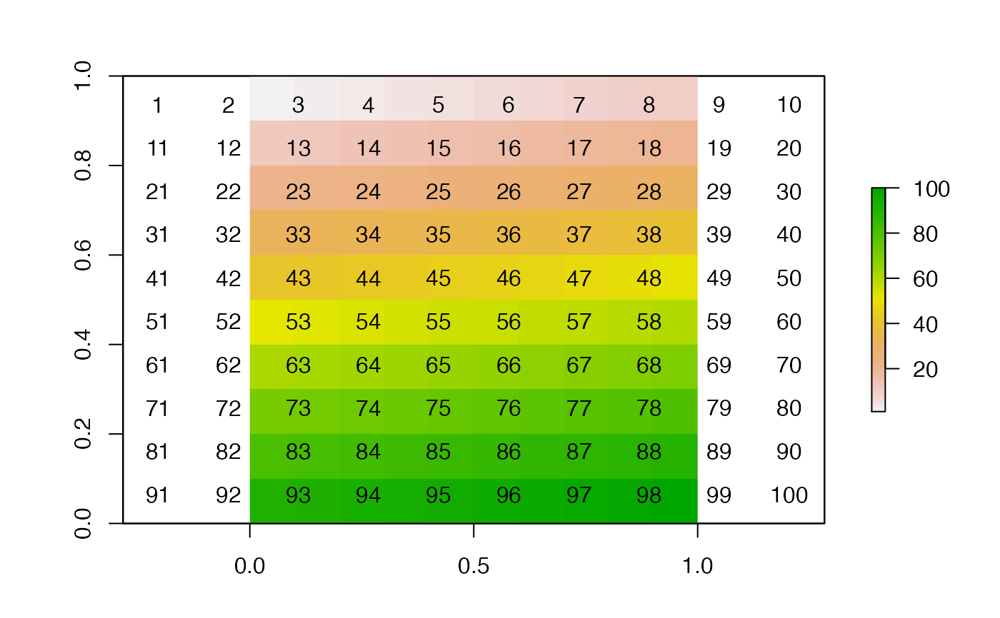
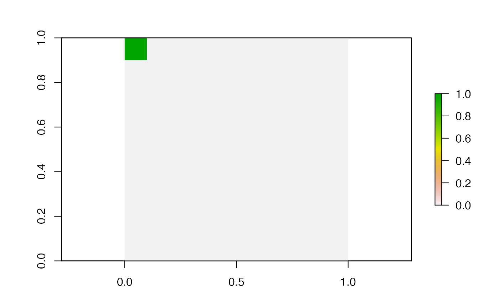

R/spatial_tools.R
cells_from_val.RdThis function obtains a RasterLayer or the cells of a RasterLayer that are equal to a specified value or lie within a specified range of values. To implement this function, a raster (x) and a value or range of values (y) for which a RasterLayer or the numbers of cells corresponding to those values are desired must be supplied. If a range of values is supplied, an additional argument (interval) controls whether or not cells within and equal to or simply within the specified range are returned.
cells_from_val(x, y, interval = 1L, cells = TRUE, na.rm = TRUE)
| x | A |
|---|---|
| y | A number or a vector with two numbers representing the lower and upper boundaries of the interval of values within which cells are identified. |
| interval | If y is a vector of length two, |
| cells | A logical variable that defines whether or not to return a vector of cell numbers ( |
| na.rm | A logical variable that defines whether or not to ignore NAs. |
The function returns a RasterLayer (if cells = FALSE) or an integer vector of numbers (if cells = TRUE) that defines the cells that are equal to, or lie within, specified value(s) y.
Edward Lavender
# Define an example RasterLayer ncl <- 10 nrw <- 10 n <- ncl*nrw mat <- matrix(1:n, ncol = ncl, nrow = nrw, byrow = TRUE) r <- raster::raster(mat) # Visualise example RasterLayer raster::plot(r)# Obtain the number(s) of cells corresponding to a particular value cells_from_val(r, 1)#> [1] 1# Obtain a RasterLayer of the cells corresponding to a particular value r1 <- cells_from_val(r, 1, cells = FALSE) raster::plot(r1)#> [1] 1 2 3 4 5 6 7 8 9 10#> [1] 2 3 4 5 6 7 8 9#> class : RasterLayer #> dimensions : 10, 10, 100 (nrow, ncol, ncell) #> resolution : 0.1, 0.1 (x, y) #> extent : 0, 1, 0, 1 (xmin, xmax, ymin, ymax) #> crs : NA #> source : memory #> names : layer #> values : 0, 1 (min, max) #>